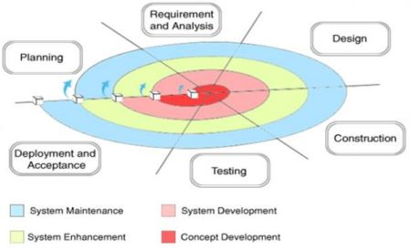

Pengertian Metodologi Spiral
Metodologi Spiral merupakan suatu model tentang tahapan pembuatan suatu perangkat lunak,
spiral model adalah salah satu dari model revolusioner, model spiral merangkai sifat interatif yaitu sifat yang
ditandai yang memungkinkan untuk mengembangkan versi dari suatu perangkat lunak secara
bertahap untuk menghasilkan perangkat lunak yang lebih lengkap atau lebih sempurna dan
terkontrol. Perangkat lunak dikembangkan dalam deretan pertambahan. Selama awal iterasi, rilis
ikremantal bisa berupa model/prototype kertas, kemudian sedikit demi sedikit dihasilkan versi
sistem yang lebih lengkap.

Tahapan Metodologi Spiral
-
Customer communication adalah aktivitas yang dibutuhkan untuk membangun
komunikasi yang efektif antara developer dengan user atau customer terutama mengenai kebutuhan dari customer.
-
Planning adalah aktivitas perencanaan ini dibutuhkan untuk menentukan sumberdaya, perkiraan waktu pengerjaan, dan
informasi lainnya yang dibutuhkan untuk pengembangan software.
-
Analysis Risk adalah aktivitas analisis resiko ini dijalankan untuk menganalisis baik resiko secara teknikal.
-
Engineering adalah aktivitas yang dibutuhkan untuk membangun 1 atau lebih representasi dari aplikasi secara teknikal.
-
Construction & Release adalah aktivitas yang dibutuhkan untuk develop software, testing, instalasi dan penyediaan user / costumer
support seperti training penggunaan software serta dokumentasi seperti buku manual penggunaan
software.
-
Customer Evaluation adalah aktivitas yang dibutuhkan untuk mendapatkan feedback dari user atau customer berdasarkan evaluasi
mereka selama representasi software pada tahap construction and release.
-
Seiring sprint berikutnya dimulai, tim memilih item lain lagi dari backlog produk dan mulai bekerja lagi.